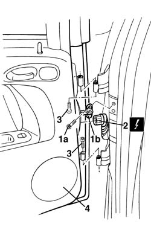

7210E38 R.R. REAR SIDE DOOR
- Path
- Procedures > 72 PANELS AND FRAME > 7210 REMOVING REFITTING > 7210E external parts > 7210E38 R.R. REAR SIDE DOOR
- Kind
- repair procedure (removal / refitting; the operation number is the code)
- Applies to
- all engines; all production periods
- Interactive page
- https://sloeber94.github.io/elrnDB-a156/en/#/3239050
Applies to: all engines; all production periods
 Removing
Removing
 Refitting
Refitting1. Undo the bolt (1a) of the door check strap (1b) and close the door again to push the check strap back in.
2. Disconnect the electrical connections.
 | Name | Connector |
|---|---|---|
2 | Rear / rear door coupling left |
| Name | Connector |
|---|---|---|
2 | Rear right door connection |
3. Undo the hinge bolts.
4. Lift the door and remove it.

Applies to: all engines; all production periods
Refitting
RemovingRefit the door on the hinges.
Tighten the hinge bolts.
Connect the electrical connection.
Check the various appliances on the door are working properly.
Make the check strap come out and tighten the bolts.
Topics linked from this page (3)
- 7010A14 rear side door - adjust centering and moulding - includes adaptation of hinges and seals on door compartment
- D35 Rear / rear door coupling left
- D36 Rear right door connection